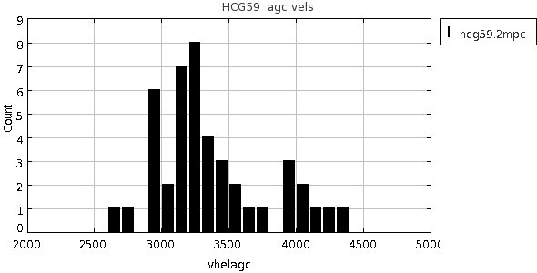
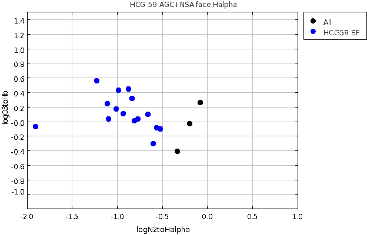

RA,Dec RA,Dec(deg) R(2Mpc) nz nopt cz sig logsig sig logLx dist*
HCG59 NRGb157 1147518+131633 176.9658 13.27583 2.1 9 11 3745 152 2.66 0.07 <41.50 0.00 56 HCG059 **SLU; maybe Lafayette too
At this distance, 2 Mpc = 2.1 degrees.
So box should be: RA > 174.86 & RA < 179.06
Dec > 11.18 & Dec < 15.38
First use the AGC to look at the velocity histogram
Make subset from agcnorthminus1.csv
RAdeg > 174.86 & RAdeg < 179.06 & Decdeg > 11.18 & Decdeg < 15.38

Hmmmm so is there structure in this region? At this point, leave the velocity window 2500 < Vhel < 4500 km/s but we will probably need to refine further. Notice that the cz given previous was 3745 which looks too high. In the AGC there are: RAdeg > 174.86 & RAdeg < 179.06 & Decdeg > 11.18 & Decdeg < 15.38 & Vhelagc > 2500 & Vhelagc < 4500 I find 44 objects
Now go to a57.1245wOC.csv; find all the entries.
Subset definition:
RAdeg > 174.86 & RAdeg < 179.06 & Decdeg > 11.18 & Decdeg < 15.38 & V21 > 2500 & V21 < 4500
Returns 31 entries (all 1,s and 2,s)
Table name: a57.1245wOC.csv
+--------+-----------+----------+------+-----+-------+------+-------+
| agcnum | radeg | decdeg | v21 | W50 | sintp | sn | icode |
+--------+-----------+----------+------+-----+-------+------+-------+
| 6627 | 174.98125 | 13.46722 | 3547 | 191 | 1.64 | 12.2 | 1 |
| 6634 | 175.05501 | 15.34167 | 3293 | 398 | 5.29 | 27.4 | 1 |
| 213158 | 175.23959 | 13.145 | 3579 | 194 | 1.11 | 10.6 | 1 |
| 215140 | 175.505 | 13.69861 | 4259 | 169 | 0.93 | 8.1 | 1 |
| 215226 | 175.88541 | 15.0425 | 2970 | 86 | 0.45 | 6.6 | 1 |
| 215598 | 175.94208 | 13.7075 | 2981 | 108 | 0.45 | 5.4 | 2 |
| 215135 | 175.94916 | 12.98083 | 3777 | 102 | 1.53 | 20.0 | 1 |
| 213336 | 175.98541 | 11.94056 | 3070 | 100 | 0.57 | 5.8 | 2 |
| 215227 | 176.01584 | 13.34667 | 3152 | 276 | 0.98 | 6.4 | 1 |
| 215197 | 176.18333 | 15.02778 | 3356 | 100 | 0.62 | 7.8 | 1 |
| 213338 | 176.18124 | 11.20722 | 2956 | 92 | 1.42 | 13.3 | 1 |
| 210746 | 176.34209 | 14.36667 | 3342 | 130 | 0.95 | 10.8 | 1 |
| 215149 | 176.48375 | 13.83917 | 3267 | 40 | 0.6 | 7.6 | 1 |
| 213339 | 176.51707 | 11.58139 | 2965 | 225 | 0.76 | 4.0 | 2 |
| 211216 | 176.53749 | 12.87944 | 3296 | 146 | 1.57 | 15.9 | 1 |
| 6747 | 176.60042 | 13.82722 | 2696 | 96 | 7.05 | 58.7 | 1 |
| 6753 | 176.6925 | 14.53278 | 3149 | 170 | 2.31 | 18.2 | 1 |
| 210779 | 176.74875 | 13.87361 | 3165 | 232 | 2.16 | 15.9 | 1 |
| 6758 | 176.77626 | 13.70639 | 3103 | 179 | 8.26 | 67.2 | 1 |
| 215151 | 176.96124 | 13.70417 | 3456 | 73 | 0.63 | 7.3 | 1 |
| 6775 | 177.05292 | 13.20833 | 3165 | 194 | 9.15 | 59.1 | 1 |
| 212846 | 177.07458 | 12.72583 | 3955 | 192 | 4.3 | 31.1 | 1 |
| 210804 | 177.12791 | 12.72972 | 3629 | 158 | 1.88 | 12.3 | 1 |
| 210806 | 177.13499 | 12.70528 | 4379 | 207 | 0.96 | 6.8 | 2 |
| 210807 | 177.18333 | 14.05278 | 3206 | 225 | 1.66 | 10.9 | 1 |
| 215154 | 177.26834 | 13.62944 | 2981 | 35 | 0.53 | 8.7 | 1 |
| 213484 | 177.30084 | 12.63167 | 4054 | 207 | 0.77 | 4.7 | 2 |
| 213487 | 177.37791 | 12.67722 | 3974 | 111 | 0.43 | 4.1 | 2 |
| 215158 | 177.41708 | 12.39389 | 3201 | 130 | 0.77 | 8.0 | 1 |
| 6862 | 178.31418 | 11.63361 | 2732 | 187 | 3.27 | 18.2 | 1 |
| 210894 | 178.49666 | 12.19778 | 3015 | 145 | 2.16 | 14.2 | 1 |
+--------+-----------+----------+------+-----+-------+------+-------+
Go back to nsa.v0.1.2.unpack.mags+lines_appmags.csv
Add a column for vhelio = z*299792.
Write that as nsa.v0.1.2.unpack.mags+lines_appmags+vhelio.csv (will replace later)
Make subset:
RA > 174.86 & RA < 179.06 & Dec > 11.18 & Dec < 15.38 & Vhelio> 2500 & Vhelio < 4500
I find 39 objects.
Now, use agc+nsa.v012.mags+lines.appmags+faceHalpha.csv
Use the same subset definition as above (but change V21=> vhelio:
RAdeg > 174.86 & RAdeg < 179.06 & Decdeg > 11.18 & Decdeg < 15.38 & Vhelio> 2500 & Vhelio < 4500
I find only 18 objects; maybe we are running into the problem of fiber collisions...
hcg59.agc+nsa.face.halpha.csv
Find the ones of these which are star forming
logN2toHalpha < -0.5
There are 15 of these:

Table name: hcg59.agc+nsa.face.halpha.csv +--------+-----------+----------+--------+-------------+---------------------+--------------------+---------------------+----------------------+ | AGCnr | radeg | decdeg | NSAID | ABSMAG_i | g-i | vhelio | logN2toHalpha | logO3toHb | +--------+-----------+----------+--------+-------------+---------------------+--------------------+---------------------+----------------------+ | 213158 | 175.23959 | 13.145 | 66260 | -16.327114 | 0.5326510000000013 | 3592.2978121280003 | -1.1130184725196035 | 0.2393008207166775 | **ALFALFA | 215598 | 175.94208 | 13.7075 | 75215 | -17.324272 | 1.1855919999999998 | 2929.339881872 | -0.5234226297413558 | -0.10886576499059653 | **ALFALFA | 213527 | 176.02917 | 13.34083 | 66294 | -14.914951 | 0.42718400000000045 | 3079.384278912 | -1.0950366885587641 | 0.027650466485775363 | | 213338 | 176.18124 | 11.20722 | 66265 | -15.897899 | 0.3321140000000007 | 2948.348493424 | -1.2273835427181914 | 0.5547462025903456 | **ALFALFA | 215197 | 176.18333 | 15.02778 | 75235 | -15.769817 | 0.5289529999999996 | 3370.1921122559997 | -0.8720070139698457 | 0.43890922565950985 | **ALFALFA | 213530 | 176.47958 | 13.51611 | 66300 | -17.767162 | 0.9000509999999977 | 3431.00402008 | -0.5627007536290958 | -0.09314289258311836 | | 215149 | 176.48375 | 13.83917 | 75208 | -17.665833 | 0.4687599999999996 | 3261.4938286879997 | -0.7697977750231786 | 0.030851566465544218 | **ALFALFA | 215612 | 176.51334 | 14.64389 | 75267 | -16.00258 | 0.7168489999999981 | 3110.117755584 | -0.6585883863810068 | 0.09305996954246543 | | 213339 | 176.51707 | 11.58139 | 66329 | -17.884827 | 0.688950000000002 | 2960.601592048 | -0.9873149974456232 | 0.4217722358231657 | **ALFALFA | 215614 | 176.66415 | 14.56056 | 75266 | -15.2770815 | 0.5850419999999996 | 3163.393791904 | -0.9364239878082132 | 0.10490554204222148 | | 215621 | 176.99417 | 13.91055 | 75263 | -15.165608 | 0.5983425000000011 | 3321.4950989440003 | -0.80727627796801 | 0.002641077208273264 | | 6775 | 177.05292 | 13.20833 | 169812 | -18.96954 | 0.6956389999999999 | 3149.4096942720003 | -0.602468683667157 | -0.30698796448005644 | **ALFALFA | 213487 | 177.37791 | 12.67722 | 66337 | -17.691395 | 0.4990060000000014 | 3984.09177984 | -0.8386942805907094 | 0.3107647313098396 | **ALFALFA | 215158 | 177.41708 | 12.39389 | 66338 | -15.508364 | 0.513007 | 3194.433656 | -1.0119817950937608 | 0.16963651427388007 | **ALFALFA **This one shows SDSS absorption | 213529 | 176.23959 | 13.3875 | 66297 | -15.769315 | 0.7156310000000001 | 3145.211107312 | -1.9034508821445932 | -0.07767077413730077 | +--------+-----------+----------+--------+-------------+---------------------+--------------------+---------------------+----------------------+
So there are 5 SF galaxies in HCG 59 which are not detected in ALFALFA.
Becky's list includes 1 more that is not in the NSA with lines file: #AGCnr radeg decdeg NSAID ABSMAG_i g-i vhelio logN2toHalpha log O3toHb 210802 177.11501 12.72722 140279 -19.923561 0.95537900000000 4111.46722724 "" "" That makes 1 Ha with no HI and 5 NSA star-forming for a total of 6.
Maybe we also should look at objects which are not in NSA but which are blue. The problem is how to we figure that out in any systematic way?